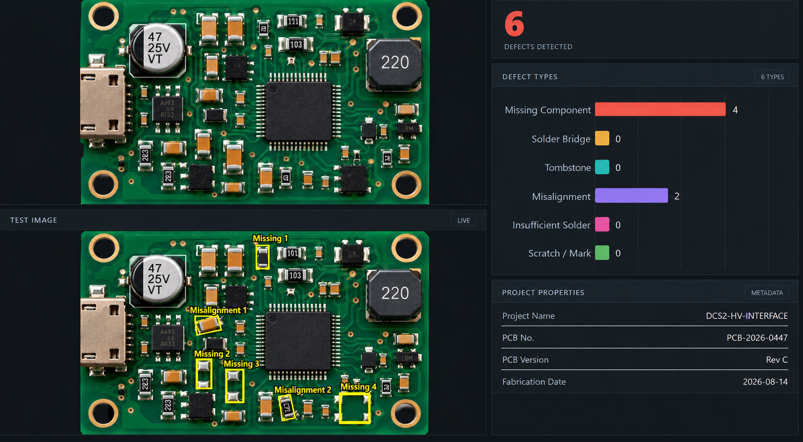

INDUSTRIAL COMPUTER VISION01

PCB Automatic Optical Inspection
Developing a vision-based PCB inspection workflow combining YOLO component detection with OpenCV-based image alignment, ROI extraction and reference-to-test comparison. The objective is to identify actionable defects such as missing components and wrong orientation while suppressing irrelevant board-level differences.
YOLO26OpenCVSSIMImage AlignmentAOI